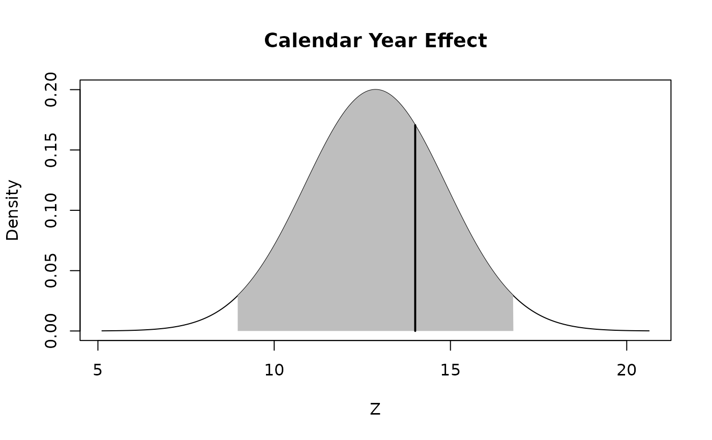

Testing for Calendar Year Effect
cyEffTest.RdOne of the three basic assumptions underlying the chain ladder method is the independence of the accident years. The function tests this assumption.
Arguments
- Triangle
cumulative claims triangle. Assume columns are the development period, use transpose otherwise. A (mxn)-matrix \(C_{ik}\) which is filled for \(k \leq n+1-i; i=1,\ldots,m; m\geq n \), see
qpaidfor how to use (mxn)-development triangles with m<n, say higher development period frequency (e.g quarterly) than origin period frequency (e.g accident years).- ci
confidence interval. Default: .95. A confidence interval is a type of interval estimate, computed from the statis tics of the observed data, that might contain the true value of an unknown population parameter. The interval has an associated confidence level that quantifies the level of confidence that the parameter lies in the interval.
Details
The main reason why this independence can be violated in practice is the fact that there could be certain calendar year effects such as major changes in claims handling or in case reserving or external influences such as substantial changes in court decisions or inflation.
As described by the Mack's 1994 paper a procedure is designed to test for calendar year influences.
The procedure returns a summary statistic \(Z\) which is assumed to be Normally Distributed. It is therefore possible to define a confidence interval threshold in order to evaluate the outcome of the test.
Value
cyEffTest returns a list with the following elements
- test_table
complete table of results
- Z
summary statistic
- E
expected value of the resulting distribution
- Var
variance of the resulting distribution
- Range
vector of the range corresponding the confidence interval threshold selected
- ci
confidence interval
References
Mack, T., Measuring the Variability of Chain Ladder Reserve Estimates, Casualty Actuarial Society Forum, Spring 1994
Author
Marco De Virgilis devirgilis.marco@gmail.com
Note
Additional references for further reading:
Thomas Mack. Distribution-free calculation of the standard error of chain ladder reserve estimates. Astin Bulletin. Vol. 23. No 2. 1993. pp.213:225
Thomas Mack. The standard error of chain ladder reserve estimates: Recursive calculation and inclusion of a tail factor. Astin Bulletin. Vol. 29. No 2. 1999. pp.361:366
See also
See also qpaid for dealing with non-square triangles,
dfCorTest for the test for correlations between subsequent development factors,
chainladder for the chain-ladder method,
summary.cyEffTest,
plot.cyEffTest
Examples
# Before actually applying the Chain Ladder technique it is necessary to check
# wether the triangle has Calendar Year Effect
# Apply the function to the triangle and save the output into the variable test
test <- cyEffTest(RAA)
# Plot the confidence interval and the test metric
plot(test)

# The metric is within the confidence interval, therefore the triangle doesn't
# have Calendar Year Effect
# Print the summary table
summary(test)
#> $Table
#> j S_j L_j Z_j n m E_Zj Var_Zj
#> 1 2 1 1 1 2 0 0.50000 0.2500000
#> 2 3 3 0 0 3 1 0.75000 0.1875000
#> 3 4 3 1 1 4 1 1.25000 0.4375000
#> 4 5 1 3 1 4 1 1.25000 0.4375000
#> 5 6 1 3 1 4 1 1.25000 0.4375000
#> 6 7 2 4 2 6 2 2.06250 0.6210938
#> 7 8 4 4 4 8 3 2.90625 0.8037109
#> 8 9 4 4 4 8 3 2.90625 0.8037109
#>
#> $Totals
#> Totals
#> Z 14.000000
#> E[Z] 12.875000
#> Var[Z] 3.978516
#>
#> $Range
#> Value
#> Lower 8.965613
#> Upper 16.784387
#>
# Print only the main outcomes
print(test)
#> Calendar Year Effect
#>
#> Z = 14
#>
#> 95%-Range = ( 8.965613 ; 16.78439 )
#>
#> Calendar Year Effect: FALSE
# The test has returned a negative outcome. This means that the triangle is
# not affected by Caledar Year Effect and therefore the chain ladder method
# can be applied.